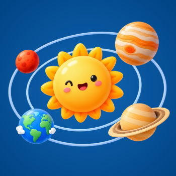

Päikesesüsteem ja planeedid
Avasta Päikesesüsteemi ja planeetide põnev maailm! Õpi mängides, lahenda ülesandeid ja pane oma teadmised proovile.
Minu kosmosereis
Läbi kaheksa etappi ja avasta Päikesesüsteem!
1 Tere, kosmoseuurija! Pooleli
Tere tulemast kosmosereisile!
Kas oled kunagi mõelnud, kui suur on maailmaruum? Või miks planeedid tiirlevad ümber Päikese?
Sellel kosmosereisil õpid tundma Päikesesüsteemi, uurid planeete, täidad põnevaid ülesandeid ja osaled kosmosemissioonil.
Õpid nimetama kaheksat planeeti, kirjeldama nende järjestust ja põhiomadusi ning selgitama, kuidas planeedid ümber Päikese tiirlevad.
Liigu etappide vahel omas tempos. Kui midagi on keeruline, võid alati tagasi tulla.
2 Mida ma juba tean? Alustamata
Kui palju sa kosmosest juba tead?
Vasta neljale küsimusele. Ära muretse, kui sa mõnda vastust veel ei tea! Pärast saad õigeid vastuseid vaadata.
3 Avastame Päikesesüsteemi! Alustamata
Avastame Päikesesüsteemi!
Uurime Päikest ja kaheksat planeeti. Siia lisame õppevideo, interaktiivse mudeli ja H5P ülesande.
Õppematerjal on koostamisel.
4 Tutvume planeetidega Alustamata
Vali oma planeet!
Vali üks planeet, uuri selle omadusi ja lahenda planeetidega seotud ülesandeid.
Õppematerjal on koostamisel.
5 Kosmosemissioon Alustamata
Valmistume kosmosemissiooniks!
Kavanda koos rühmaga kosmosemissioon valitud planeedile ja loo oma avastustest plakat.
Rühmatöö juhend lisatakse siia.
6 Jagame oma avastusi! Alustamata
Tutvusta oma avastusi!
Esitle oma rühma kosmosemissiooni, kuula kaaslasi ja anna neile tagasisidet.
Esitluse ja tagasiside juhend lisatakse siia.
7 Kontrollime oma teadmisi! Alustamata
Pane oma teadmised proovile!
Mängi Scratchi mängu „Kosmosekaitsja: Planeetide missioon“ ja lahenda H5P ülesandeid.
Scratchi mäng ja ülesanded lisatakse siia.
8 Minu järgmine kosmoseseiklus Alustamata
Mida ma õppisin?
Mõtle oma õpiteekonnale. Vali, kas soovid midagi korrata või hoopis mõnda kosmoseteemat põhjalikumalt uurida.
Enesehindamise ülesanne lisatakse siia.
Õpiteekonna kirjeldus õpetajale
Siia lisame õppeteekonna eesmärgid, õpiväljundid, õppetegevuste metoodilise kirjelduse, hindamise ja diferentseerimise võimalused.
Õpetaja vaade on koostamisel.